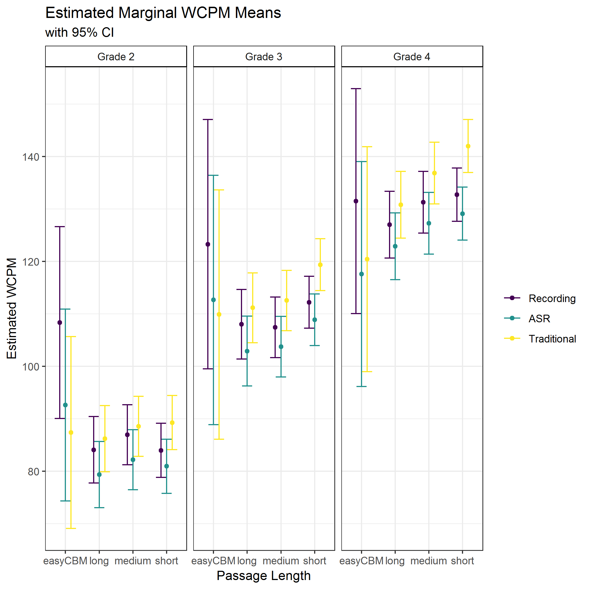

The purpose of this post is to determine whether there are scoring method differences in WCPM between the human scoring criterion versus traditional or ASR scoring of traditional CBM-R and CORE passages.
We examined the differences in three scoring methods for words correct per minute (WCPM) scores of curriculum-based measurement of oral reading fluency (CBM-R). The three scoring methods were: (1) Traditional - the real-time human scores, akin to traditional CBM-R assessments in schools; (2) ASR - automatic speech recogntion scores; and (3) Recording - the criterion measure, where recorded audio files were scored by human assessors in a private space wearing headsets (with the ability to rewind, replay, and adjust audio). We also explored the effect of passage length using: (1) easyCBM passages as traditional CBM-R passages of about 250 words read for 60 seconds; and CORE passages read in their entirety that were (2) long, about 85 words, (3) medium, about 50 words, and (4) short, about 25 words.
This is the first study to compare scores by expert assessors to both ASR and traditional CMB-R scores consistent with those conducted in schools. These comparisons allowed for the analysis of the potential net gain of ASR compared to current school practices (as opposed to scores based on audio recordings), which we speculate is a more useful metric for educators, administrators, school district officials, and stakeholders. These results are part of our larger Content & Convergent Evidence Study. For details about the Content & Convergent Evidence Study procedures, including information on the sample, CBM-R passages, administration, and scoring methods, go here.
We found statistically significant and substantive differences in WCPM scores between the Recording criterion and both ASR and Traditional CBM-R scoring. The magnitude of the effect sizes did not favor either the ASR or the Traditional scores, providing evidence that the ASR WCPM scores were just as suitable as the Traditional WCPM scores, when compared to the Recording criterion.
Thus, there is evidence that ASR can be applied in schools to score WCPM on CBM-R assessments.
This has implications for the opportunity cost of CBM-R administration. Traditional CBM-R is administered in a one-to-one setting, requiring resources like adequately private, quiet space; time and human personnel to assess the entire classroom or school for universal screening; and high-quality, reliable, trained human assessors. A computerized CBM-R system that incorporates a validated ASR can (a) reduce human administration errors by standardizing administration setting, delivery, and scoring, and (b) reduce the cost of administration by simultaneously testing small groups or an entire classroom in only a few minutes with only one educator to monitor the environment. This can reduce the cost of CBM-R administration by eliminating the need to train staff to administer and score the assessment, which stands to make a considerable benefit to CBM-R applications in schools.
We applied a mixed-effect model for WCPM scores separately for each of Grades 2 through 4, with random effects for students and passages, and fixed effects for scoring method (three levels: ASR, Recording, and Traditional), passage length (four levels: easyCBM, short, medium, and long), and their interaction passage length:scoring method. For documentaiton of the model building process go here.
wcpm ~ 1 + (1|student_id) + (1|passage_id) +
passage_length + scoring_method + passage_length:scoring_method, REML = FALSE))The following table shows the results of this model.
| Grade 2 | Grade 3 | Grade 4 | |||||||
|---|---|---|---|---|---|---|---|---|---|
| Estimate | SE | t-value | Estimate | SE | t-value | Estimate | SE | t-value | |
| Fixed Effects | |||||||||
| Intercept1 | 108.36 | 9.33 | 11.61 | 123.30 | 12.13 | 10.17 | 131.53 | 10.94 | 12.03 |
| Long | -24.27 | 9.30 | -2.61 | -15.27 | 12.30 | -1.24 | -4.50 | 10.99 | -0.41 |
| Medium | -21.41 | 9.20 | -2.33 | -15.85 | 12.18 | -1.30 | -0.24 | 10.93 | -0.02 |
| Short | -24.38 | 9.11 | -2.68 | -11.08 | 12.09 | -0.92 | 1.22 | 10.82 | 0.11 |
| ASR | -15.72 | 2.63 | -5.98 | -10.63 | 3.15 | -3.38 | -13.90 | 3.62 | -3.84 |
| Traditional | -20.99 | 2.63 | -7.98 | -13.42 | 3.15 | -4.26 | -11.09 | 3.62 | -3.06 |
| Long:ASR | 11.00 | 2.84 | 3.87 | 5.52 | 3.30 | 1.67 | 9.77 | 3.75 | 2.60 |
| Medium:ASR | 10.98 | 2.76 | 3.98 | 6.94 | 3.24 | 2.14 | 9.91 | 3.72 | 2.67 |
| Short:ASR | 12.70 | 2.69 | 4.72 | 7.29 | 3.20 | 2.28 | 10.27 | 3.67 | 2.80 |
| Long:Traditional | 23.12 | 2.84 | 8.13 | 16.55 | 3.30 | 5.02 | 14.88 | 3.75 | 3.96 |
| Medium:Traditional | 22.59 | 2.76 | 8.19 | 18.53 | 3.24 | 5.71 | 16.64 | 3.72 | 4.48 |
| Short:Traditional | 26.30 | 2.69 | 9.77 | 20.58 | 3.20 | 6.43 | 20.36 | 3.67 | 5.55 |
| Random Effects (SD) | |||||||||
| Students | 37.76 | – | – | 34.59 | – | – | 38.23 | – | – |
| Passages | 8.84 | – | – | 11.76 | – | – | 10.40 | – | – |
| Residual | 18.22 | – | – | 20.05 | – | – | 20.33 | – | – |
| 1 Intercept represents easyCBM passages with Traditional scores. | |||||||||
Based on the model’s results, we calculated pairwise comparisons from the estimated marginal means to examine the effects of scoring method.
The figure below shows the estimated marginal WCPM means for each scoring method by grade and passage length. The 95% confidence intervals for al comparisons overlap, suggestig that the estimated WCPM scores across scoring methods are relatively comparable.

To assist the interpretation of the resulte of the final model, we also report the statistical significance of the differences in marginal means, as well as Cohen’s (1988) d effect size estimates in the table below.
All but two pairwise comparisons (across grades and passage lengths) between the Recording criterion and the ASR or Traditional WCPM scores were statistically significant at the p = .01 level. Thus, both the ASR and Traditional scores were statistically significantly different from Recording criterion scores.
An examination of the magnitude of the effect sizes between the Recording criterion and the ASR or Traditional WCPM scores showed mixed results. Of the 12 comparisons (four passage lengths x three grades), the Recording - ASR effect size was smaller in absolute magnitude than the Recording - Traditional in seven comparisons, always for the short passages, never for the long passages, and mixed results for the other passages lengths and by grade. This provides weak support to favor the ASR scores over the Traditional scores in our study.
For the easyCBM passages, both the ASR and the Traditional scores always underestimated WCPM compared to the Recording, and the ASR was always higher than the Traditional (except for Grade 4). For all of the CORE passage lengths (long, medium, and short) across grades, the ASR underestimated and the Traditional overestimated the WCPM compared to the Recording scores. The Traditional also overestimated the WCPM scores compared to the ASR.
Ideally, there would have been no difference between the ASR and Recording criterion scores, but our results provide evidence that ASR scores are comparable to the existing, Traditional CBM-R scores.
| Grade 2 | Grade 3 | Grade 4 | |||||||||||||
|---|---|---|---|---|---|---|---|---|---|---|---|---|---|---|---|
| Estimate | SE | z-value | p-value | Effect Size | Estimate | SE | z-value | p-value | Effect Size | Estimate | SE | z-value | p-value | Effect Size | |
| easyCBM | |||||||||||||||
| Recording - ASR | 15.72 | 2.63 | 5.98 | < 0.001 | 0.54 | 10.63 | 3.15 | 3.38 | 0.001 | 0.38 | 13.90 | 3.62 | 3.84 | < 0.001 | 0.48 |
| Recording - Traditional | 20.99 | 2.63 | 7.98 | < 0.001 | 0.69 | 13.42 | 3.15 | 4.26 | < 0.001 | 0.46 | 11.09 | 3.62 | 3.06 | 0.002 | 0.34 |
| ASR - Traditional | 5.27 | 2.63 | 2.00 | 0.045 | 0.22 | 2.78 | 3.15 | 0.88 | 0.377 | 0.10 | -2.81 | 3.62 | -0.78 | 0.438 | -0.09 |
| long | |||||||||||||||
| Recording - ASR | 4.72 | 1.08 | 4.37 | < 0.001 | 0.14 | 5.11 | 0.98 | 5.20 | < 0.001 | 0.14 | 4.14 | 0.98 | 4.22 | < 0.001 | 0.11 |
| Recording - Traditional | -2.13 | 1.08 | -1.97 | 0.049 | -0.06 | -3.14 | 0.98 | -3.19 | 0.001 | -0.08 | -3.78 | 0.98 | -3.86 | < 0.001 | -0.09 |
| ASR - Traditional | -6.85 | 1.08 | -6.34 | < 0.001 | -0.19 | -8.25 | 0.98 | -8.40 | < 0.001 | -0.22 | -7.92 | 0.98 | -8.09 | < 0.001 | -0.20 |
| medium | |||||||||||||||
| Recording - ASR | 4.74 | 0.84 | 5.68 | < 0.001 | 0.13 | 3.69 | 0.77 | 4.78 | < 0.001 | 0.10 | 3.99 | 0.82 | 4.86 | < 0.001 | 0.10 |
| Recording - Traditional | -1.60 | 0.84 | -1.92 | 0.055 | -0.04 | -5.11 | 0.77 | -6.62 | < 0.001 | -0.13 | -5.55 | 0.82 | -6.75 | < 0.001 | -0.13 |
| ASR - Traditional | -6.34 | 0.84 | -7.59 | < 0.001 | -0.16 | -8.81 | 0.77 | -11.39 | < 0.001 | -0.23 | -9.54 | 0.82 | -11.61 | < 0.001 | -0.22 |
| short | |||||||||||||||
| Recording - ASR | 3.01 | 0.57 | 5.30 | < 0.001 | 0.07 | 3.34 | 0.56 | 5.93 | < 0.001 | 0.08 | 3.63 | 0.57 | 6.33 | < 0.001 | 0.08 |
| Recording - Traditional | -5.31 | 0.57 | -9.33 | < 0.001 | -0.12 | -7.17 | 0.56 | -12.72 | < 0.001 | -0.16 | -9.26 | 0.57 | -16.15 | < 0.001 | -0.20 |
| ASR - Traditional | -8.33 | 0.57 | -14.63 | < 0.001 | -0.19 | -10.51 | 0.56 | -18.65 | < 0.001 | -0.24 | -12.89 | 0.57 | -22.49 | < 0.001 | -0.28 |